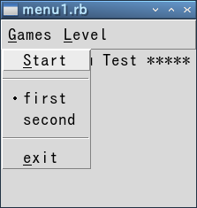
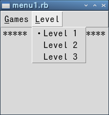
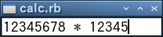
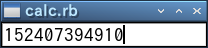
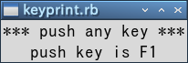
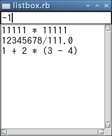

次は GUI には欠かせないメニューの作り方を説明します。Tk ではメニューのためのウィジェットがいくつか用意されていて、いろいろなメニューを構成することができます。今回は Windows のようにウィンドウの上部に「メニューバー」を表示する方法を簡単に説明します。
メニューバーを作る場合、最初に TkMenu.new() でメニューのオブジェクトを生成します。そして、メインウィンドウのオプション menu に生成したオブジェクトを configure() で設定します。メインウィンドウのオブジェクトは Tk.root でアクセスすることができます。プログラムは次のようになります。
リスト: メニューバーの設定 require 'tk' menubar = TkMenu.new Tk.root.configure(menu: menubar)
これでメインウィンドウにメニューバーが設定されました。あとはこのメニューバーに具体的なメニューを追加します。メニューを設定する主なメソッドを示します。
各メソッドはオプションを設定することができます。add_cascade() を指定すると、そのメニューを選択したときに複数のメニューを表示します。add_checkbutton() は yes/no のような二者択一の情報を設定するために使います。add_command() はメニューが選択されたときに、オプション command で指定したコールバック関数を実行します。add_radiobutton() は複数の値からひとつを選ぶ場合に使います。add_separator() は区切りを表示するだけです。
add_checkbutton() と add_radiobutton() はメニューバーに直接定義するのではなく、add_cascade() と組み合わせて使うことが一般的です。add_checkbutton() と add_radiobutton() を使う場合、選択する値をオプション value で指定し、その値を格納するオブジェクトをオプション variable で指定します。また、command オプションを設定することもできます。この場合、オブジェクトに値がセットされるとともに、指定した関数が実行されます。
たとえば、将棋やリバーシのようなゲームのメニューを考えてみましょう。最低限必要となるメニューは、ゲームの開始、先手と後手の選択、コンピュータの強さの設定、などでしょうか。最初の 2 つはメニュー Games で設定し、強さはメニュー Level で選択することにします。この場合、まず Games と Level をメニューバーに追加します。
リスト : メニュー Games と Level の設定 games = TkMenu.new(menubar, tearoff: false) levels = TkMenu.new(menubar, tearoff: false) menubar.add_cascade(label: "Games", underline: 0, menu: games) menubar.add_cascade(label: "Level", underline: 0, menu: levels)
まず TkMenu.new() で Games と Level 用のメニューオブジェクトを生成します。これらのメニューは menubar に配置されるので、TkMenu.new() の第 1 引数には menubar を指定します。オプション tearoff は、そのメニューをウィンドウから引きちぎることができるかを設定します。デフォルトでは true になっています。その場合、メニューを選択すると一番上に破線が表示され、そこをクリックするとそのメニューが独立したウィンドウになります。
add_cascade() のオプション label はメニューに表示するテキストを設定します。オプション underline (under でも可) は、ラベルの文字に下線を付け加えます。この状態で下線のついた文字をキーボードから入力することで、そのメニューを選ぶことができます。そして、オプション menu で表示するメニューオブジェクトを指定します。
それではメニュー Games を設定しましょう。
リスト : Games の設定
games.add_command(label: "Start", under: 0, command: proc { start })
games.add_separator
games.add_radiobutton(label: "first", variable: action, value: 0)
games.add_radiobutton(label: "second", variable: action, value: 1)
games.add_separator
games.add_command(label: "exit", under: 0, command: proc { exit })
Start を選ぶとゲームを開始します。ゲームを開始する関数、これはゲームによって異なりますが、この例では start() を実行します。
先手・後手の選択はラジオボタンを使っています。これで、先手、後手のどちらかを選ぶことができます。たとえば、後手をクリックすると、action の値は 1 にセットされ、ラベルの左側にレ点がつきます。使用するオブジェクトはあらかじめ TkVariable.new() で生成しておきましょう。
これで Games をクリックすると、Start、first・second、Exit という 3 つのメニューが現れます。
 Games をクリックしたときの動作
次はメニュー Level の設定です。
リスト : Level の設定 levels.add_radiobutton(label: 'Level 1', variable: level, value: 1) levels.add_radiobutton(label: 'Level 2', variable: level, value: 2) levels.add_radiobutton(label: 'Level 3', variable: level, value: 3)
ラジオボタンを使えば 3 つの中からひとつを選ぶことができます。ゲームの中身は空ですが、このように簡単にメニューを設定することができます。
 Level をクリックしたときの動作
リスト：メニューのサンプルプログラム
# coding: utf-8
require 'tk'
# フォントの指定
TkOptionDB.add('*font', 'Takaoゴシック 14')
# vairable 用の変数
action = TkVariable.new(0)
level = TkVariable.new(1)
# ダミー
def start
print "start!\n"
end
menubar = TkMenu.new
Tk.root.configure(menu: menubar)
# メニューの設定
games = TkMenu.new(menubar, tearoff: false)
levels = TkMenu.new(menubar, tearoff: false)
menubar.add_cascade(label: "Games", underline: 0, menu: games)
menubar.add_cascade(label: "Level", underline: 0, menu: levels)
# Games
games.add_command(label: "Start", under: 0, command: proc { start })
games.add_separator
games.add_radiobutton(label: "first", variable: action, value: 0)
games.add_radiobutton(label: "second", variable: action, value: 1)
games.add_separator
games.add_command(label: "exit", under: 0, command: proc { exit })
# Labels
levels.add_radiobutton(label: 'Level 1', variable: level, value: 1)
levels.add_radiobutton(label: 'Level 2', variable: level, value: 2)
levels.add_radiobutton(label: 'Level 3', variable: level, value: 3)
# ラベル
TkLabel.new(text: "***** Menu Test *****").pack
Tk.mainloop
今までの例題は、マウスで操作するものばかりでした。今度はキーボードからの入力を受け付けるウィジェットを説明します。
エントリー (entry) は 1 行の文字列を入力、または編集することができます。例題として、数式を入力して計算する calc.rb を作ります。これはとても簡単に作ることができます。まずエントリーから説明しましょう。
エントリーオブジェクトは TkEntry.new() で生成します。よく使うオプションは textvariable です。エントリーで入力されたデータは指定したオブジェクトに格納されます。また、オブジェクトの値が変更されると、エントリーの内容も変更されます。面白いオプションが show です。これはパスワードのように画面に見えてはいけない文字列を打ち込むときに使います。たとえば、show: '*' とすれば、入力された文字は * として表示されます。
メソッドは cget(), configure() のほかに、文字列の取得、挿入、削除、カーソルの移動、カット & ペースト、スクロールなど、たくさん用意されていますが、文字列の入力だけならば、それらを使う機会はあまりないでしょう。また、エントリーのキー操作はエディタ Emacs に準じているので、Emacs をお使いの方には扱いやすいと思います。
それではプログラムを作りましょう。データの入力が完了したらボタンを押してもらってもいいのですが、データはキーボードから入力するのですから、マウスよりもキーボードで操作した方がいいでしょう。リターンキーの入力で式を計算するようにします。キー入力もイベントのひとつですからバインディングを設定することができます。
プログラムは次のようになります。
リスト : 式入力電卓
# coding: utf-8
require 'tk'
TkOptionDB.add('*font', 'Takaoゴシック 14')
# 式を格納するオブジェクト
$buffer = TkVariable.new('')
# 計算
def calc(event)
if $buffer.value != ''
val = eval($buffer.value)
$buffer.value=(val.to_s)
end
end
# エントリー
e = TkEntry.new(textvariable: $buffer).pack
e.focus
# バインディング
e.bind('Return', proc {|e| calc(e) })
Tk.mainloop
計算は関数 eval() を使えば簡単です。eval() は与えられた Ruby の式として評価します。とても簡単なプログラムですが、モジュール Math をインクルードすれば、sin(), cos(), tan() などの関数を呼び出すことができるので、簡単な関数電卓としても使うことができます。
一般の GUI アプリケーションの場合、キー入力はアクティブになっているウィンドウに渡されます。Tk では、これをフォーカスウィンドウ (focus window) といいます。フォーカスウィンドウは、マウスの操作によって変更することができますが、メソッド focus によってプログラムで設定することができます。
widget.focus
e.focus でフォーカスウィンドウをエントリーに設定します。これですぐに式を入力することができます。
 数式を入力する
 リターンキーで計算する
このプログラムのポイントはメソッド bind() です。
widget.bind(eventsequence, callback, args, ...)
すでにバインドされているコールバック関数がある場合、新しい関数に差し替えられます。bind() で設定されたコールバック関数が呼び出される場合、引数 args によって渡される値が異なります。args が省略された場合、イベントを表す TkEvent::Event のオブジェクトが渡されます。args を指定すると、必要な情報だけを取得して引数に渡すことができます。これはあとで説明します。
イベントの指定は次のような構文を持っています。
'modifier-modifier-type-detail'
type は GUI 環境上で発生するイベントタイプを表します。ユーザーが操作するときに発生する主なイベントタイプには次のようなものがあります。
| Key, KeyPress | キーが押された |
| KeyRelease | キーが離された |
| Button, ButtonPress | マウスのボタンが押された |
| ButtonRelease | マウスのボタンが離された |
| Motion | マウスの移動 |
| Enter | マウスカーソルがウィンドウの中に入った |
| Leave | マウスカーソルがウィンドウから出た |
このほかにも、ウィンドウが破棄されたときに発生するイベントなど、様々なイベントタイプがあります。
マウスとキーのイベントには、ボタンやキーの種類を detail で指定します。マウスでは左ボタンが 1 となります。キーの種類は名前で指定します。英数字はその文字がそのまま名前となります。このほかに、改行キーに対する Return、バックスペースキーに対する BackSpace などがあります。
detail を指定する場合は type を省略することができます。ただし、'1' という指定は 'KeyPress-1' ではなく 'Button-1' となるので注意してください。また、'KeyPress-a' は 'a' と書くことができます。それから、'KeyPress' のように detail を省略すると、種類によらずキーが押されたときにバインドされたコマンドが実行されます。
イベントタイプの前にはモディファイア (modifier) をつけることができます。たとえば、'Control-d' はコントロールキーと d キーを同時に押したときのイベントを表します。主なモディファイアを次に示します。
| Control | Ctrl キーを押しながらの入力 |
| Shift | Shift キーを押しながらの入力 |
| Alt | Alt キーを押しながらの入力 |
| Button1, B1 | マウスの左ボタンを押しながらの入力 |
| Button3, B3 | マウスの右ボタンを押しながらの入力 |
| Double | ダブルクリック |
| Triple | トリプルクリック |
Tk の出身地である X Window は 3 ボタンマウスを使うので、Button2 は右ボタンではなく中ボタンとなります。たとえば、左ボタンのダブルクリックに対応するイベントは 'Double-1'となります。また、イベントタイプは配列を使って複数個指定することができます。たとえば、['Escape', 'a'] はEsc キーが押されたあとで a キーを押したイベントに対応します。
Ruby/Tk の場合、bind(event, callback, args, ...) の引数 args に % から始まる記号 (文字列) を渡すと、callback の引数には記号が表すイベント情報が渡されます。複数のイベント情報を取得する場合、args 以降に複数の文字列を指定するか、記号を空白で区切った文字列を渡してください。
| 記号 | イベント情報 |
|---|---|
| %b | マウスボタンの番号 |
| %x, %y | マウスカーソルの座標 |
| %W | ウィンドウのパス名 |
| %A | キーに対応する文字 |
| %K | キーに対応する名前 (Keysym) |
| %% | % 自身を表す |
これ以外にも、いろいろな情報がありますので、詳細は Tcl/Tk のマニュアルなどをお読みください。たとえば、次のプログラムを実行すると、キーに対応する名前を表示することができます。
リスト：キーの名前を表示
# coding: utf-8
require 'tk'
TkOptionDB.add('*font', 'Takaoゴシック 14')
$buffer = TkVariable.new('')
# ラベルの設定
TkLabel.new(text: '*** push any key ***').pack
a = TkLabel.new(textvariable: $buffer)
a.pack
a.bind('KeyPress', proc {|k| $buffer.value=("push key is #{k}") }, '%K')
a.focus
Tk.mainloop()
コールバック関数の引数 k には '%K' で指定したイベント情報、つまりキーに対応する名前が渡されます。実際に試してみると、F1 や F2 キーには F1, F2 という名前が割り当てられていることがわかります。
 F1 キーを押したときの動作
次は、リストボックスとスクロールバーというウィジェットを説明します。リストボックスは複数の文字列を表示し、ユーザーはその中からひとつ以上の文字列を選ぶことができます。スクロールバーは、ほかのウィジェットの表示範囲を制御します。例題として、calc.rb で入力した計算式をリストボックスに格納しておいて、必要なときに取り出せるように改造してみましょう。
最初にリストボックスから説明します。リストボックスのオブジェクトは TkListbox.new() で生成します。TkListbox.new() で指定する主なオプションは表示範囲のコントロールと選択方法です。
| xscrollcommand | x 方向のスクロールメソッドを指定 |
| yscrollcommand | y 方向のスクロールメソッドを指定 |
| selectmode | セレクションモード |
xscrollcommand/yscrollcommand には、スクロールバーウィジェットのメソッド set() を指定します。リストボックスの表示範囲が変更されたときに指定したメソッド set() が呼び出されます。これは TkScrollbar と一緒に説明します。セレクションには次のモードが用意されています。
selectmode のデフォルト値は browse です。データの挿入、削除、取得は次のメソッドで行います。
このほかにもいろいろなメソッドがありますが、とくにスクロールバーに関係する xview/yview メソッドが重要です。これは TkScrollbar のところで説明します。
位置の指定には次の方法があります。
セレクションモードが extended のときにドラッグで選択した場合、最初の行が anchor で最後の行が active となります。したがって、delete に anchor と active を指定すると、選択した行をリストボックスから削除することになります。
次はスクロールバーを説明します。スクロールバーは、その両端に矢印がつき、中央付近には四角いスライダが表示されます。矢印を左クリックするか、スライダをドラッグすることで表示位置を変更します。また、矢印とスライダの隙間をクリックすると 1 画面分スクロールします。スクロールバーは TkScrollbar.new() [*1] でオブジェクトを生成します。TkScrollbar.new() で主に使用されるオプションには次のものがあります。
| orient | スクロールバーの方向 |
| troughcolor | 矢印とスクロールの隙間の色 |
| command | スクロールバーが動いたときに実行するメソッド |
orient はスケールと同じくスクロールバーの方向を指定するもので、horizontal または h を指定すると水平になり、vertical または v で垂直になります。command はスクロールバーを動かしたときに実行する関数を指定します。リストボックスとスクロールバーを連動させる場合、ここにはリストボックスの表示位置を制御するメソッド xview() や yview() を指定します。
スクロールバーで重要なメソッドは set() です。
widget.set(first, last)
set() には 2 つの引数 first と last を渡します。first と last は 0 から 1 の間の実数で、表示されている範囲を表しています。たとえばリストボックスと連動している場合、全体の行数が 100 行で 20 行目から 30 行分表示されているとすると、set(0.2, 0.5) となります。つまり、データ全体の 20 % の位置から 50 % の位置まで表示されていることを表します。スクロールバーではこのデータからスライダの位置と大きさを調整します。
リストボックスのオプション xscrollcommand や yscrollcommand に set() を指定する場合、次のように行います。
xscrollcommand: proc {|first, last| widget.set(first, last)}
手続きオブジェクトの引数は *args のように可変個引数にしてもかまいません。その場合、set() を呼び出すときは set(*args) としてください。
widget はスクロールバーのオブジェクトです。リストボックスで表示範囲が変更されると set() が実行されます。このとき、リストボックスの表示範囲 (first, last) が引数として渡されます。これでリストボックスの内容が変更されたとき、それをスクロールバーに反映することができます。
逆に、スクロールバーを変更したとき、それをリストボックスに反映させるためのオプションが command です。ここにリストボックスのメソッド xview や yview を指定します。指定方法は簡単で、リストボックスのオブジェクトを widget とすると次のようになります。
command: proc {|*args| widget.yview(*args)}
スクロールバーの操作によって、メソッドには次に示す文字列が引数として渡されます。
まあ、付け加えられるデータを無理に覚える必要はありません。スクロールバーを使うときは、連動するウィジェットのスクロールオプションに set() を指定して、スクロールバーの command に表示を制御するウィジェットコマンドを指定する、と理解しておけば十分でしょう。
それでは、calc.rb を改造しましょう。まず必要なウィジェットを生成します。
リスト：ウィジェットの生成と配置
require 'tk'
# フォントの設定
TkOptionDB.add('*font', 'Takaoゴシック 14')
# 式を格納するオブジェクト
$buffer = TkVariable.new('')
# Entry の生成
e = TkEntry.new(textvariable: $buffer)
# Listbox の生成
$lb = TkListbox.new
# Scrollbar の生成
sb1 = TkScrollbar.new(orient: 'v',
command: proc {|*a| $lb.yview(*a)})
sb2 = TkScrollbar.new(orient: 'h',
command: proc {|*a| $lb.xview(*a)})
# Listbox の設定
$lb.configure(yscrollcommand: proc {|*a| sb1.set(*a)})
$lb.configure(xscrollcommand: proc {|*a| sb2.set(*a)})
# grid による配置
e.grid(row: 0, columnspan: 2, sticky: 'ew')
$lb.grid(row: 1, column: 0, sticky: 'nsew')
sb1.grid(row: 1, column: 1, sticky: 'ns')
sb2.grid(row: 2, column: 0, sticky: 'ew')
xscrollcommand / yscrollcommand の設定にはスクロールバーのオブジェクトが必要なので、スクロールバーを生成してから configure() で設定します。
リストボックスとスクロールバーは grid() で配置します。grid は格子状にウィジェットを配置するジオメトリマネージャです。ウィンドウを M 行 N 列のセルに分割し、そこにウィジェットを配置するのです。x 方向の位置はオプション column で指定し、y 方向の位置は row で指定します。
grid には pack とは違うオプション columnspan と rowspan があります。これは、複数のセルにまたがってウィジェットを配置するために使います。columnspan は x 方向にまたがるセルの数、rowspan は y 方向にまたがるセルの数を指定します。
それから、pack ではオプション fill でウィジェットを引き伸ばすことができましたが、grid ではオプション sticky を使います。
| n | 上寄せ |
| s | 下寄せ |
| e | 右寄せ |
| w | 左寄せ |
| ns | 上下方向に引き伸ばす |
| ew | 左右方向に引き伸ばす |
sticky は pack のオプション anchor と同じ機能もあわせ持っています。エントリーはいちばん上に配置しますが、columnspan で x 方向にセルをつなげて、sticky = 'ew' で左右に広げています。
次はバインディングを設定します。リストボックスからデータを選ぶ処理ですが、ダブルクリックしてもらうことにします。プログラムは次のようになります。
リスト：バインディングの設定
# 計算
def calc()
expr = $buffer.value
$lb.insert('end', expr)
$lb.see('end')
val = eval(expr)
$buffer.value=(val.to_s)
end
# 式の取り出し
def get_expr()
$buffer.value=($lb.get('active'))
end
# バインディング
e.bind('Return', proc { calc })
$lb.bind('Double-1', proc { get_expr })
エントリーではリターンキーが入力されると関数 calc() が実行されます。calc() では式をリストボックスに代入し、計算結果を $buffer にセットします。これが逆になると、答えをリストボックスに代入することになります。それから、メソッド see() を使ってセットした計算式が見えるようにスクロールしています。
リストボックスでダブルクリックすると関数 get_expr() が実行されます。ダブルクリックされた位置からメソッド get() でデータを取り出して $buffer にセットします。ダブルクリックですから、位置の指定は active と anchor どちらでもかまいません。
 式の履歴が残るように改造した電卓
#
# リストボックスとスクロールバーのサンプル
#
# Copyright (C) 2016 Makoto Hiroi
#
# coding: utf-8
require 'tk'
# フォントの設定
TkOptionDB.add('*font', 'Takaoゴシック 14')
# 式を格納するオブジェクト
$buffer = TkVariable.new('')
# Entry の生成
e = TkEntry.new(textvariable: $buffer)
# Listbox の生成
$lb = TkListbox.new
# Scrollbar の生成
sb1 = TkScrollbar.new(orient: 'v',
command: proc {|*a| $lb.yview(*a)})
sb2 = TkScrollbar.new(orient: 'h',
command: proc {|*a| $lb.xview(*a)})
# Listbox の設定
$lb.configure(yscrollcommand: proc {|*a| sb1.set(*a)})
$lb.configure(xscrollcommand: proc {|*a| sb2.set(*a)})
# 計算
def calc()
expr = $buffer.value
$lb.insert('end', expr)
$lb.see('end')
val = eval(expr)
$buffer.value=(val.to_s)
end
# 式の取り出し
def get_expr()
$buffer.value=($lb.get('active'))
end
# バインディング
e.bind('Return', proc { calc })
$lb.bind('Double-1', proc { get_expr })
# grid による配置
e.grid(row: 0, columnspan: 2, sticky: 'ew')
$lb.grid(row: 1, column: 0, sticky: 'nsew')
sb1.grid(row: 1, column: 1, sticky: 'ns')
sb2.grid(row: 2, column: 0, sticky: 'ew')
# フォーカスの設定
e.focus
Tk.mainloop
Ruby/Tk の場合、TkXScrollbar と TkYScrollbar を使うと、スクロールバーを簡単に設定することができます。TkXScrollbar.new で横方向、TkYScrollbar.new で縦方向のスクロールバーを生成し、メソッド assign(widget) でスクロールバーを取り付けるウィジェットを指定します。
たとえば、履歴付き電卓の場合、リストボックスとスクロールバーの設定は次のようになります。
リスト : リストボックスとスクロールバーの設定 # Listbox の生成 $lb = TkListbox.new # Scrollbar の生成 sb1 = TkYScrollbar.new sb1.assign($lb) sb2 = TkXScrollbar.new sb2.assign($lb)
たったこれだけでリストボックス $lb にスクロールバー sb1, sb2 を取り付けることができます。